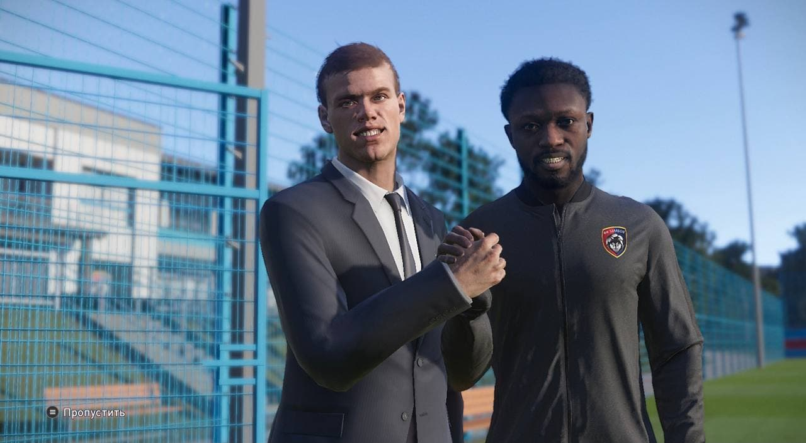
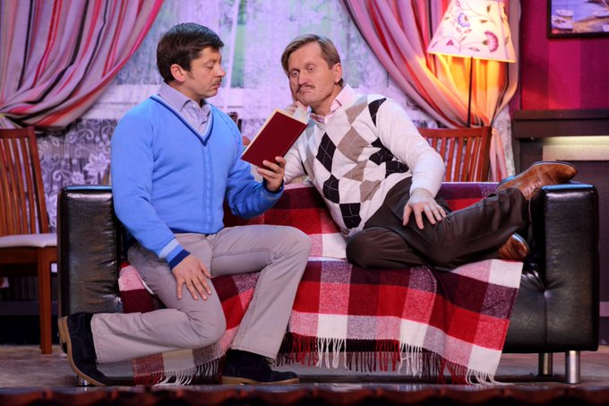
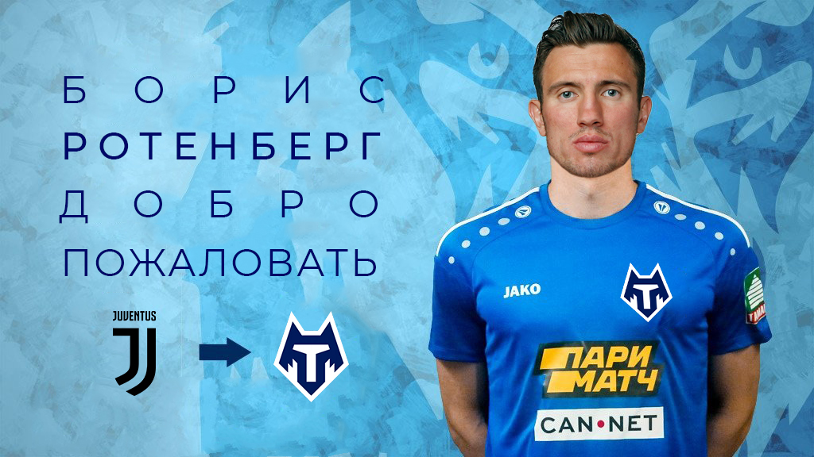
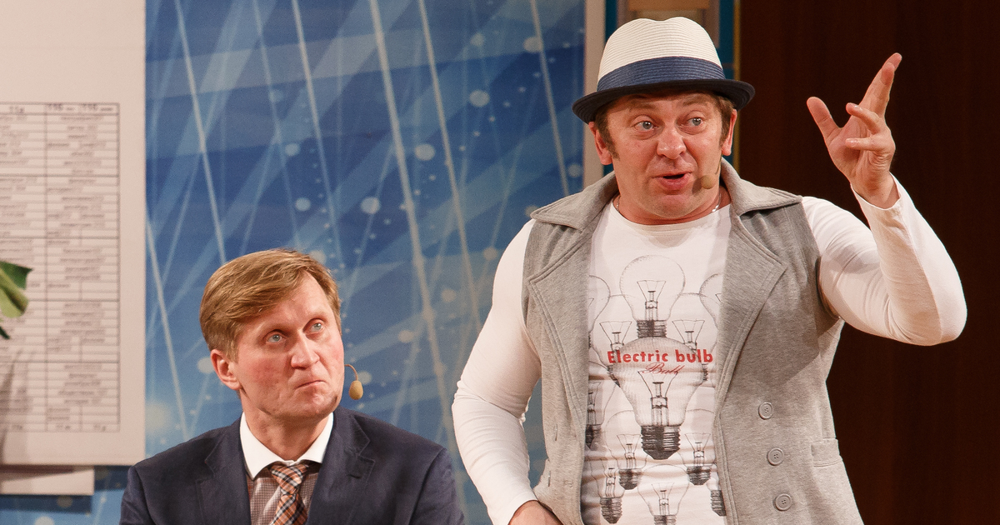
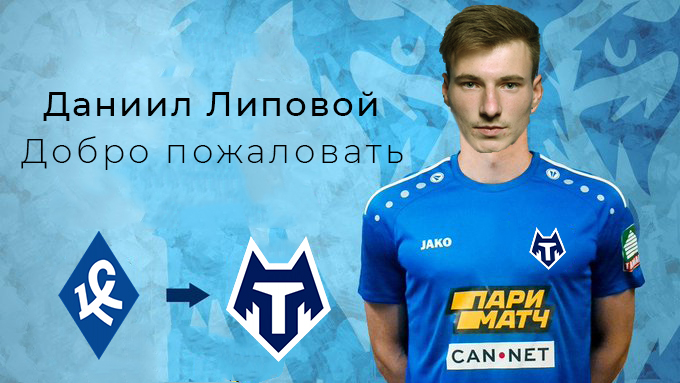
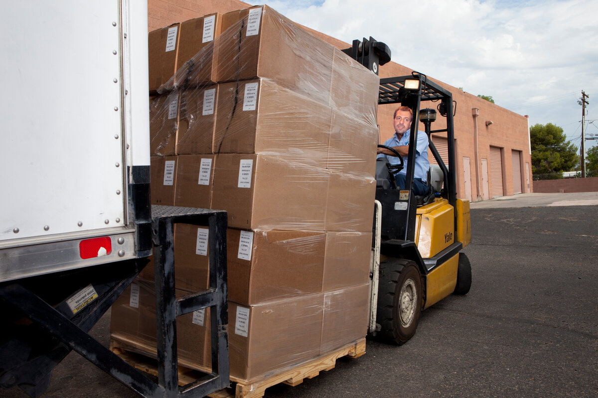
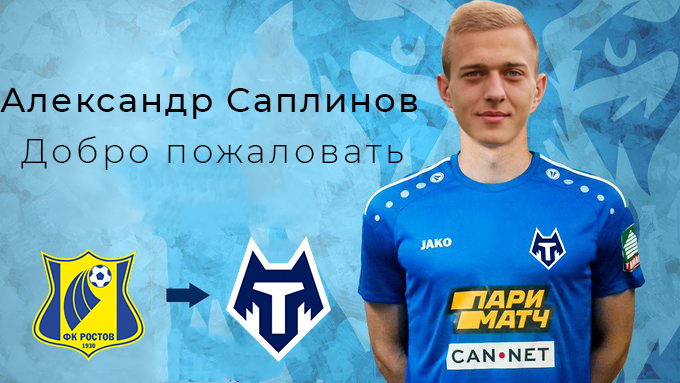

Александр Кокорин перешёл в аренду в Тамбов!!!!
ПФК Тамбов заключил годичное соглашение с нападающим итальянской Фиорентины Александром Кокориным.Для этого Дибала Кзэликов позвонил Нобелю Арустамяну,который благодаря его «отличным»знанием итальянского и борения за Ювентус,смог договориться с боссами «фиалок».Зарплату игрока будет оплачиваться контрактом Бориса Ротенберга,который,как я уже говорил,отказался от неё,ведь у него уже все есть.Александр уже приехал на базу клуба,где познакомился с игроками команды и провёл первую тренировку.Влад Чижов решил проверить скорость бега Александра и налетел с Серегой на него однако он получил п*зды от Александра стулом,тем самым показав Владу,что у него сезон закончился,а у Кокорина только начался.ДОБРО ПОЖАЛОВАТЬ,САША!!!!!

Тамбов выходит на новый уровень.
После покупки Бориса Ротенберга в команду у клуба открылись новые двери. В команду уже поступило около десятка предложений купить того или иного игрока. Например, известный вам Артём Дзюба со своим "товарищем" Азмуном, с ними захотел Али Соу, который только получил предложение от Зенита. Не один раскрученный клуб не мог обойтись без предложений этого игрока - Месси, только недавно дебютировав в ПСЖ, он уже хочет уйти из клуба, так как шейхи ПСЖ не могут обеспечить его хотелки, и он рассчитывает на помощь уральский шейхов. Нельзя забыть про Роналду, который набил татуировку с логотипом Тамбова на всё спину, а на груди надпись "Тамбов навеки". Но Тамбов нацелен на нормальных игроков, этих лохов брать клуб не собирается. Пока следующий трансфер под секретом, но всё, что известно - игрок из лучшей лиги - РПЛ.

Борис Ротенберг перешёл в Тамбов из Ювентуса
Борис Ротенберг ушёл на очередное повышение-в ПФК Тамбов.Его пригласил Дибала.только не тот,который Дибала,а тот,который Кзэликов.С Борисом было заключено 2-летнее соглашение.От зарплаты игрок отказался,потому что прекрасно понимал,кто ее заберёт.Борису даже не пришлось делать звонок отцу-он сам договорился о своём трансфере.Ювентус получил за трансфер Бориса пизды от Сереги.Влад же провёл пару китайских приемов Старой Сеньоре и вернул справедливость.Для того чтобы заманить Бориса одной силы Влада и Сереги было недостаточно.Для этого был прислан Артур Пирожков,который своим еблом смутил фанатов Ювентуса,заставив их отдать Бориса.Вообщем,ДОБРО ПОЖАЛОВАТЬ,БОРЯ!!!!

ФК Тамбов проигнорировал ситуацию с закрытием стадионов и всех спортивных мероприятий как другие клубы и будет собирать полный стадион в ПЕС 21
«Мы не будем не пускать наших болельщиков на стадион,хотя нам советовали так сделать.Мы ТАМБОВ!НАС НЕ ОСТАНОВИТЬ!»-дополнил Тамбовчанин из Саудовской Аравии.Для соблюдения антиковидных мер футбольный клуб будет выдавать маски по удвоенной цене,которые можно приобрести на нашем сайте,который «работает» с мая.Такую коммерческую идею предложил всем нам известный Влад Чижов,который закупил маски у семейства Ротенбергов. Также хотим дополнить,что всю информацию о ФК Тамбов и о его тратах вы не можете увидеть в «Общей папке»Влада

Даниил Липовой перешёл в Тамбов.
Как сообщает «банк Влада Чижова»,Фк Тамбов заключил годичное соглашение с Даниилом,которы выступал за Куинс Парк Рейнджерс,поэтому надо опасаться,чтобы Григорян не вы*бал его нахуй.Но с этим проблем не будет.Влад своих в обиду не даст.Сумма трансфера составила 350 миллионов рублей,которые все-таки дошли до Тамбова.Липовой будет играть под номером 0,потому что Дибала Кзэликов решил посмотреть свою оценку по его игре в российском кино.Даниилу придётся доказывать не только клубу и болельщикам свою состоятельность,но и Владу с Чижем,потому что они всякую «Липу»не любят,Закопать могут в Алешкинском все-таки.

Влад Чижов заключил поставку «своих»помидоров в ФК Тамбов.
Как сообщает канал «ЧЁ?»,Влад Чижов согласовал помидорский контракт с Тамбовом.Теперь игроки фк Тамбов будут питаться в столовой аджикой от Влада Чижова.Дибала Кзэликов уже встретился с Владом в офисе клуба и оформил сделку.Также ходили слухи о заключении соглашения с Сергеем Галицким,который уже упаковал свои семечки без скорлупы в фургон,но сделка в последний момент сорвалась.Влад просто избил Сергея,чтобы нейтрализовать конкурента.Серега его закопал в Алешкинском Лесу,привезя его из Краснодара,специально в Тушино. PS.Сергея нашли в фургоне с семечками без скорлупы.Серега не успел закопать,так как у Влада закончился сезон

Александр Саплинов перешёл в Тамбов.
Как сообщает Красный Тамбовский волк,Саплинов перешёл из Ромы в Тамбов.Жозе Моуринью и его Рома благодаря Александру остались в жалкой Серии А.Игрок забил 120 мячей,120 из которых он забил после постоянных попаданий в штанги.Сумма трансфера составила 1 кг упаковок витаминов для роста,потому что с его 1,95 м он уменьшился в росте и скоро догонит Гребнетора.Зарплату игрок будет получать от Дибалы Кзэликова,который заманил Александра предложением в 10 тысяч евро,которые он взял в кредит у банка,которым заведует Влад Чижов,поэтому никого кидалова не будет.